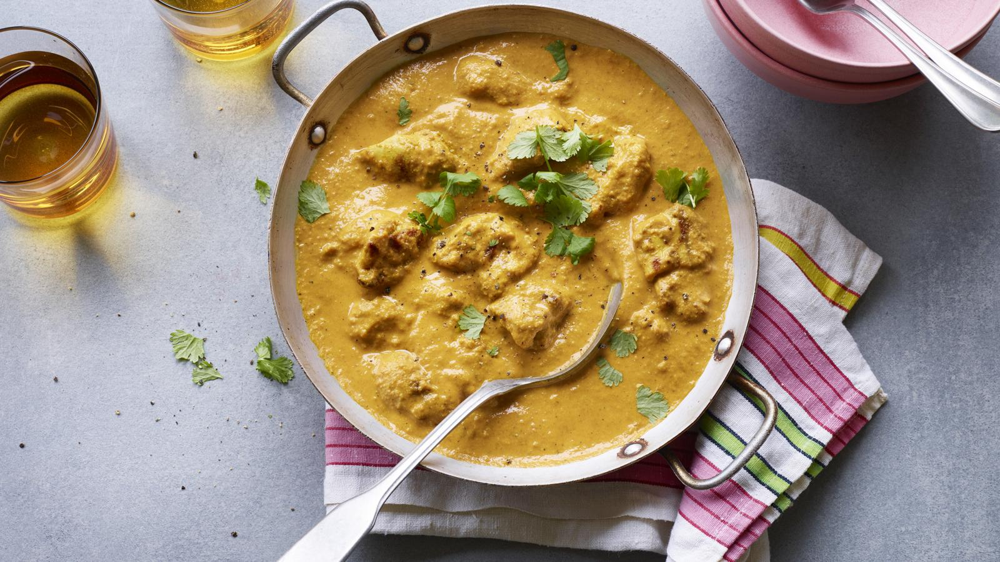

Quick chicken korma

Quick chicken korma
Griddling the chicken before adding it to the sauce gives this simple chicken korma an irresistible smokiness.
Leave the curry to stand for 30 minutes before reheating if you have time –
it helps the aromatic flavours develop.
It took a little bit of experimentation to get this korma to taste exactly the way I wanted to it. Creamy, but not cloying, mild but not flavourless.
I really wanted it to stand out as a curry the adults would love,
as well as the kids, but also for it to be quick and simple.
Ingredients
For the chicken
- 4 boneless, skinless chicken thighs, trimmed of excess fat and quartered
- ½ tsp ground turmeric
- 1 tbsp lime or lemon juice
- 2 tsp rapeseed or sunflower oil
- ½ tsp fine sea salt
For the sauce
- 2 tbsp sunflower oil or 1 tbsp ghee
- 1 tsp cumin seeds
- 1 medium onion, very finely chopped
- 4 garlic cloves, finely chopped
- 2 tsp finely grated fresh root ginger
- ½ x 400g can chopped tomatoes, blended until smooth (alternatively use passata)
- 1 tsp tomato purée
- 1 tsp ground turmeric
- 1 heaped tsp garam masala
- ¼ tsp hot chilli powder
- 75g/2¾oz ground almonds
- 300ml/½ pint full-fat milk
- ½ tsp coarsely ground black pepper
- freshly cooked rice and fresh coriander, to serve
Steps:
- Put the chicken thighs in a bowl with the turmeric, lime or lemon juice, oil and salt. Toss together well and set aside for 10 minutes.
- To make the sauce, heat the oil or ghee in a saucepan and add the cumin seeds. Once they start to sizzle, add the chopped onion, garlic and
ginger and cook gently for 5–6 minutes over a low heat, or until well softened, stirring regularly.
- Tip the tomatoes and tomato purée into the pan and cook for another 2 minutes, stirring. Next, stir in the turmeric, garam masala, chilli powder,
black pepper and a teaspoon of salt. Add the ground almonds and milk and cook on a low heat for 10 minutes, or until thickened, stirring regularly.
- While the sauce is cooking, heat a griddle pan or heavy-based frying pan. Cook the chicken pieces for 8–10 minutes,
or until lightly browned and cooked through, turning occasionally.
- Add the chicken to the sauce, cover loosely and simmer gently together for 5–6 minutes, stirring regularly. It’s important to cover the pan as the sauce
will splatter a little as it cooks. If it becomes too thick, add a splash of water. If you have time, leave the curry to stand for 30 minutes before serving,
then reheat gently. Serve with rice on the side and fresh coriander scattered over.